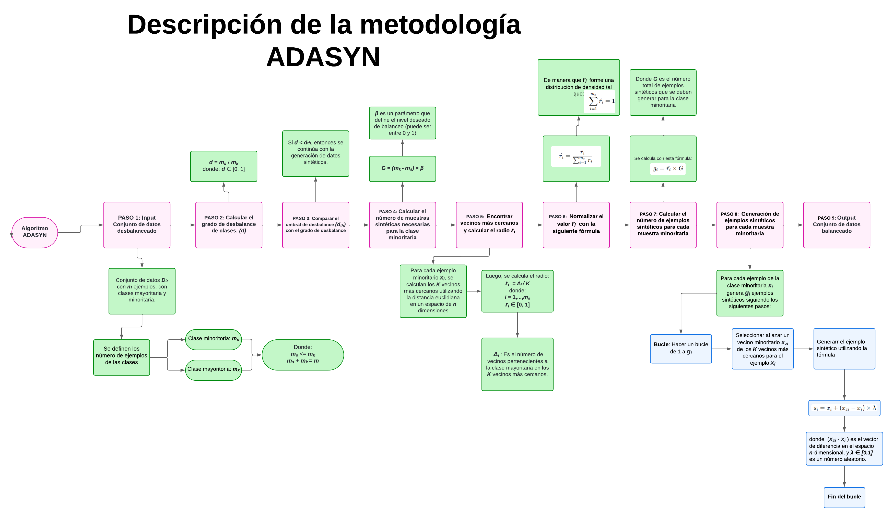
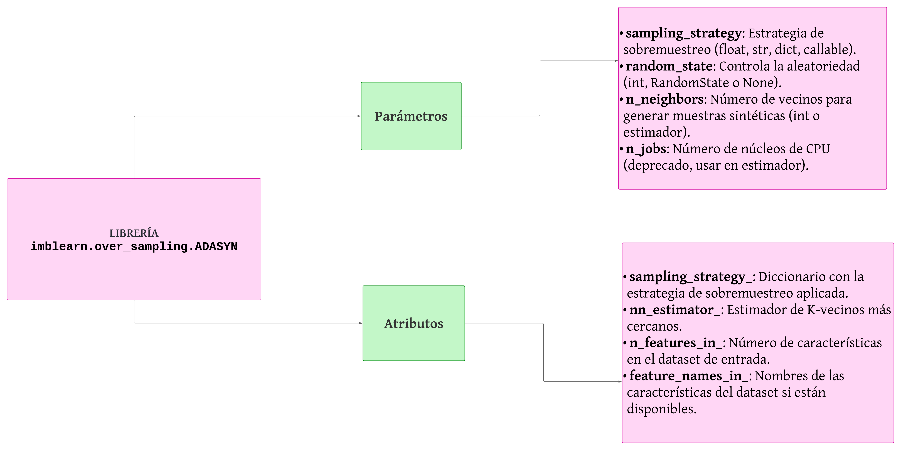
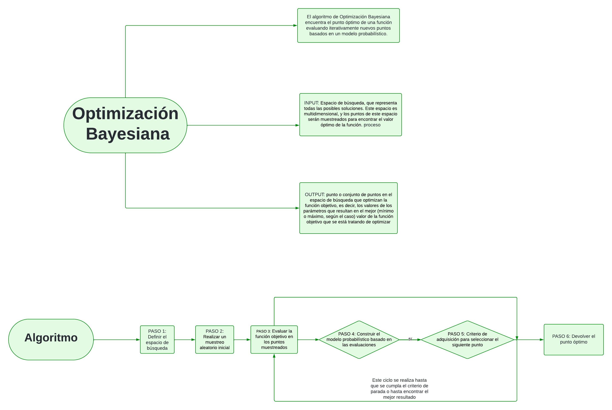
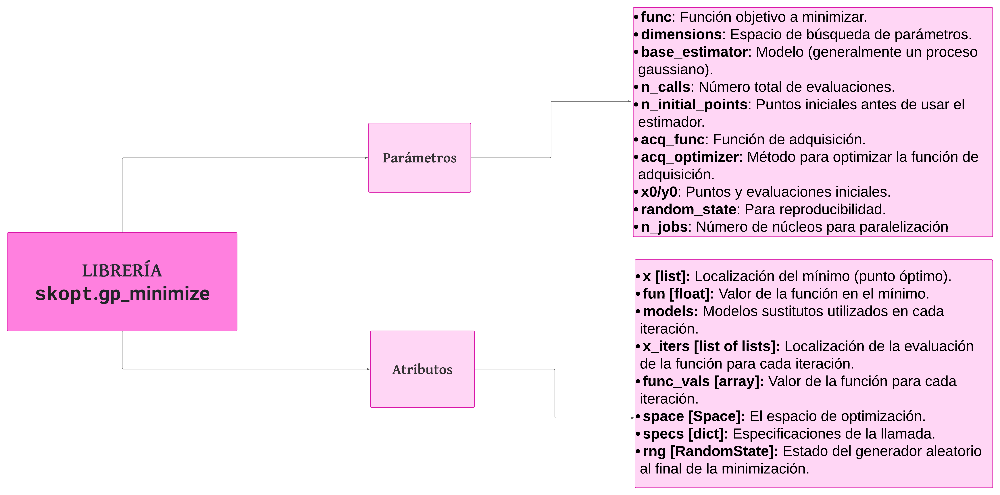

Ejercicio 1.2: Research#
Escriba un informe de no más de dos páginas (seleccione algún formato de entrega: LaTeX, JBook, Word) con las siguientes secciones: resumen, descripción de metodología y librería Python. La Figura 1 muestra un ejemplo del informe esperado. Usted tiene la libertad de decidir qué herramientas usar para diseñarlo, incluso, puedo hacerlo a mano con papel y colores.
El ejercicio de investigación se enfocará en estudiar las siguientes técnicas para balanceo de clases (ver ADASYN) e hiperparametrización (ver Bayesian Optimization).
ADASYN#
Resumen#
ADASYN (Adaptive Synthetic Sampling) es una técnica de sobremuestreo utilizada en el aprendizaje automático para equilibrar conjuntos de datos desbalanceados, que contienen una clase mayoritaria (con muchas muestras) y una clase minoritaria (con pocas muestras). ADASYN genera ejemplos sintéticos para la clase minoritaria, enfocándose en las muestras más difíciles de clasificar según la densidad local. Esto mejora el rendimiento de los modelos de clasificación al reducir el sesgo hacia la clase mayoritaria, siendo útil en aplicaciones como la investigación médica y la detección de fraudes.
Además, ADASYN se diferencia de otras técnicas de sobremuestreo como SMOTE al asignar una mayor cantidad de ejemplos sintéticos a las regiones donde la clase minoritaria es más difícil de clasificar. Esto permite una adaptación más precisa al problema específico de desbalance, evitando la generación excesiva de muestras en áreas donde la clasificación es menos compleja. ADASYN puede ser adoptado en situaciones donde la precisión y la sensibilidad a las clases minoritarias son críticas.
Descripción de metodología#

Librería Python#

Optimización bayesiana#
Resumen#
La optimización bayesiana es una técnica utilizada para la búsqueda de hiperparámetros en modelos de machine learning, la cual mejora la eficiencia de este proceso. A diferencia de métodos como grid search y random search, que prueban combinaciones de hiperparámetros sin considerar resultados previos, la optimización bayesiana construye un modelo probabilístico sobre la función objetivo (como la métrica de validación) y utiliza la información de iteraciones anteriores para enfocar la búsqueda en regiones más prometedoras del espacio de hiperparámetros. Esta técnica es especialmente útil cuando el espacio de búsqueda es amplio o el entrenamiento del modelo es costoso, ya que reduce el número de evaluaciones necesarias para encontrar combinaciones óptimas.
La optimización bayesiana no solo es eficaz en la búsqueda de hiperparámetros, sino que también puede manejar espacios de búsqueda mixtos, incluyendo variables continuas, discretas o categóricas. Además, es capaz de adaptarse a problemas con funciones objetivo ruidosas o no convexas, lo que la hace particularmente útil en tareas de optimización difíciles y en aplicaciones industriales donde los recursos computacionales son limitados.
Descripción de metodología#

Librería Python#

Referencias#
“ADASYN: Adaptive Synthetic Sampling in imbalanced-learn”. Imbalanced-learn contributors. Disponible en: https://imbalanced-learn.org/stable/references/generated/imblearn.over_sampling.ADASYN.html. Consultado: 16 de octubre de 2024.
“ADASYN: Adaptive Synthetic Sampling Approach for Imbalanced Learning”. Haibo He y Yang Bai. 2008 IEEE International Joint Conference on Neural Networks (IEEE World Congress on Computational Intelligence), pp. 1322-1328, 2008. DOI: 10.1109/IJCNN.2008.4633969. Publicado por: IEEE.
“Adaptive Synthetic Sampling (ADASYN)”. Activeloop.ai. Disponible en: https://www.activeloop.ai/resources/glossary/adaptive-synthetic-sampling-adasyn/. Fuente: Activeloop.ai.
“Optimización bayesiana de hiperparámetros”. Rodrigo, Joaquín Amat. Disponible en: https://cienciadedatos.net/documentos/62_optimizacion_bayesiana_hiperparametros. Fuente: Cienciadedatos.net.
Skopt.Gp_minimize — scikit-optimize 0.8.1 documentation. Disponible en: https://scikit-optimize.github.io/stable/modules/generated/skopt.gp_minimize.html. Fuente: Github.io.